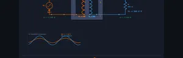
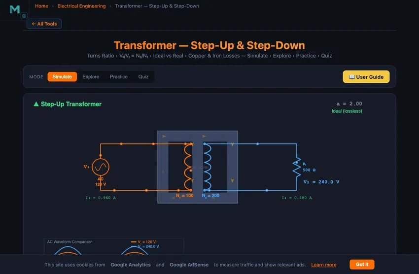

Transformer — Step-Up & Step-Down
3D Model — Transformer — Step-Up & Step-Down
Free transformer simulator — explore step-up and step-down transformers, calculate turns ratio, voltage, current, and efficiency. Ideal vs real mode with losses.
Turns Ratio • V₂/V₁ = N₂/N₁ • Ideal vs Real • Copper & Iron Losses — Simulate • Explore • Practice • Quiz
Display Controls
Σ Live equations — values substituted from current state
💡 What-if coach — insights from current values
1 Overview
The Transformer Simulator demonstrates how electrical transformers transfer energy between primary and secondary windings through electromagnetic induction. You can explore step-up and step-down voltage transformation, the turns ratio (N₂/N₁), primary and secondary currents, and the impact of copper and iron losses on efficiency. The canvas displays an animated transformer with magnetic flux flowing through the core and synchronised AC waveforms for both windings.
This tool is designed for electrical engineering students, power systems trainees, and physics learners studying Faraday’s law of electromagnetic induction, voltage transformation ratios, and real-world transformer losses.
2 Building the Circuit

The simulator opens in Simulate mode with V₁ = 120 V, N₁ = 100 turns, N₂ = 200 turns, and RL = 500 Ω (ideal transformer, no losses). This gives a turns ratio of 2.0 and a step-up output of 240 V. To begin:
- Drag the V₁ Primary slider (1–240 V) to change the input voltage.
- Adjust N₁ and N₂ sliders (10–500 turns) to set the turns ratio. If N₂ > N₁, the transformer steps up; if N₂ < N₁, it steps down.
- Change the Load Resistance RL (10–10,000 Ω) to vary the secondary current and power output.
- Enable the Real Transformer (losses) checkbox to add copper (I²R) and iron (hysteresis + eddy current) losses, and observe efficiency drop below 100%.
Navigate through Simulate, Explore, Practice, and Quiz modes using the pill tabs at the top.
3 Energising the Circuit
Simulate mode provides the interactive transformer workspace. The canvas shows the transformer schematic with animated magnetic flux lines and AC waveforms. Key controls:
- V₁ Primary slider: Sets the input AC voltage from 1 to 240 V.
- N₁ and N₂ sliders: Set primary and secondary turns. The turns ratio a = N₂/N₁ directly determines the voltage transformation: V₂ = a × V₁.
- RL Load slider: Sets load resistance. Secondary current I₂ = V₂/RL, and primary current I₁ = a × I₂ (ideal).
- Real Transformer checkbox: Activates copper losses (proportional to I²) and iron core losses (fixed losses due to hysteresis and eddy currents). Efficiency becomes η = Pout/Pin × 100%.
The readout cards display: turns ratio, transformer type (step-up or step-down), secondary voltage V₂, primary current I₁, secondary current I₂, input power Pin, output power Pout, and efficiency percentage.
4 Circuit Theory
Explore mode organises transformer theory into three categories:
- Transformer Basics: Covers electromagnetic induction, Faraday’s law, turns ratio, ideal transformer equations (V₂/V₁ = N₂/N₁), and the principle that power is conserved in an ideal transformer.
- Losses & Efficiency: Explains copper losses (I²R heating in windings), iron losses (hysteresis loss from magnetic domain reversal and eddy current loss from circulating currents in the core), and how laminated silicon steel cores minimise eddy currents.
- Applications: Describes power transmission (step-up for long-distance, step-down for distribution), isolation transformers, instrument transformers (CTs and PTs), and autotransformers.
Each concept card provides formulas, explanations, and an interactive canvas illustration.
5 Try a Problem
Practice mode generates problems such as: “A transformer has N₁ = 200 turns and N₂ = 50 turns. If V₁ = 240 V, find V₂”, “Calculate primary current if secondary current is 2 A and turns ratio is 5:1”, or “Find efficiency if Pin = 500 W and total losses are 25 W.” Enter your answer and receive a step-by-step solution.
Quiz mode presents 5 multiple-choice questions covering turns ratio, step-up vs step-down identification, current transformation, copper and iron losses, and efficiency calculations. Review your score and detailed explanations at the end.
6 Tools, Export & Shortcuts
- Type exact values: every slider has a companion number box — type a precise V₁, N₁, N₂, or RL instead of dragging.
- Presets: one-click setups for Step-Up 2:1, Step-Down 2:1, 1:1 Isolation, Real + Losses, and Heavy Load.
- Show Calculations: the button on the canvas opens a step-by-step derivation (turns ratio → voltage → currents → power → efficiency) in classical notation for the current inputs.
- Live equations & What-if coach: collapsible panels below the controls show the substituted formulas and plain-language insights about your current settings.
- Show Equation / Show Grid: toggle the on-canvas turns-ratio equation and a background reference grid.
- Export: CSV sweeps the load resistance and records V₂, I₂, power, and efficiency for plotting; PNG saves the canvas as a watermarked image. Both are also on the canvas right-click menu.
- Keyboard: Ctrl+Z undo, Ctrl+Shift+Z redo, Esc closes the calculation modal.
7 Field Tips
- Start with an ideal transformer (losses unchecked) to understand the basic turns ratio relationship, then enable losses to see real-world behaviour.
- Set N₁ = N₂ to create a 1:1 isolation transformer — voltage stays the same but the circuits are galvanically isolated.
- Notice that when you step up voltage, current steps down proportionally — power is conserved (P = V × I).
- With the Real Transformer mode on, try increasing load current by lowering RL. Watch copper losses (I²R) increase significantly while iron losses remain roughly constant.
- For maximum efficiency, transformers operate best at or near rated load. Very light loads give poor efficiency because iron losses dominate.
- Remember: turns ratio a = N₂/N₁. If a > 1, it steps up voltage; if a < 1, it steps down voltage.
- Use Practice mode to drill the three core equations: V₂ = a×V₁, I₂ = I₁/a, and η = Pout/Pin × 100%.
Understanding Transformers — Free Interactive Step-Up & Step-Down Simulator
A transformer changes AC voltage using two coils on a shared iron core. The turns ratio a = N₂/N₁ sets the output: V₂ = a × V₁. When a > 1 it steps voltage up (and current down); when a < 1 it steps down. An ideal transformer conserves power, while a real one loses 1–5% to copper and iron losses.

A transformer is an electrical device that transfers energy between circuits through electromagnetic induction. It consists of two or more coils (windings) wrapped around a common magnetic core. The primary winding receives AC voltage, creating a changing magnetic flux in the core, which induces a voltage in the secondary winding according to Faraday’s law of electromagnetic induction. The voltage ratio between the windings is determined by the turns ratio: V₂/V₁ = N₂/N₁. Our interactive simulator lets you adjust primary voltage, winding turns, and load resistance while watching animated magnetic flux flow through the core and comparing AC waveforms in real time.
Step-Up vs Step-Down Transformers
A step-up transformer has more turns on the secondary winding than the primary (N₂ > N₁), which increases the output voltage while proportionally decreasing the output current. This type is used in power transmission to raise voltage for long-distance delivery, reducing I²R losses in the cables. A step-down transformer has fewer secondary turns (N₂ < N₁), lowering the voltage for safe distribution to homes and equipment. In an ideal transformer, power is fully conserved: P₁ = V₁ × I₁ = V₂ × I₂ = P₂.
Transformer Losses and Efficiency
Real transformers experience two categories of energy loss. Copper losses (I²R losses) occur because winding wire has finite resistance, generating heat proportional to the square of the current. Iron losses (core losses) include hysteresis loss — energy wasted as magnetic domains in the core reverse direction each AC cycle — and eddy current loss, caused by circulating currents induced in the core material. To minimise eddy currents, transformer cores are made from thin laminated sheets of silicon steel. Well-designed power transformers achieve efficiencies of 95% to 99%, making them among the most efficient electrical machines.
Transformer Equations & Calculations
The fundamental transformer equations are: Turns ratio a = N₂/N₁, V₂ = a × V₁, and I₂ = I₁/a (ideal). Efficiency is calculated as η = (P₂/P₁) × 100%. Voltage regulation measures the drop from no-load to full-load secondary voltage: VR% = (V₂₀ₗ − V₂ₗₗ)/V₂ₗₗ × 100%. These formulas are essential for transformer design and selection in power systems engineering.
From 11 kV to 415 V — A Real Distribution Transformer in One Calculation
The transformer that feeds your neighbourhood typically steps 11 kV three-phase down to 415 V three-phase (240 V per phase to neutral). It is a 500 kVA unit, often a Delta-Star configuration, mounted on a pole or in a kiosk. Walk through the calculation:
| Step | Working | Result |
|---|---|---|
| Turns ratio (phase to phase) | a = Vp/Vs = 11000/415 | 26.5 |
| Primary current at rated load | Ip = S/(√3·Vp) = 500000/(√3·11000) | 26.2 A |
| Secondary current at rated load | Is = S/(√3·Vs) = 500000/(√3·415) | 695 A |
| Current ratio (cross-check) | Is/Ip = 695/26.2 | 26.5 ✓ (matches turns ratio) |
695 A at 415 V is what the cables coming out of the bottom of the transformer have to carry. That is why the low-voltage cables are so much thicker than the high-voltage ones above. Energy is conserved at the transformer, but it gets repackaged from low-current high-voltage into high-current low-voltage. Each form has its own engineering trade-offs — insulation cost on the HV side, conductor cost on the LV side.
Why You Cannot Use a Transformer on DC
This question comes up in every first-year electrical class. The textbook answer is “because transformers need a changing flux to induce EMF.” That is true but unsatisfying. Here is what actually happens if you connect a DC supply to a transformer primary:
- At the instant you close the switch, the current rises rapidly from zero. The changing current creates changing flux. The secondary sees an induced EMF — briefly. This is the transient.
- Once the current reaches steady-state DC value, the flux is also steady. dφ/dt = 0, so the secondary EMF is zero. The induced voltage you wanted has vanished.
- Meanwhile, the primary current is now limited only by the winding resistance (a few ohms at most), so a typical 230 V supply produces tens of amperes through the primary. The winding overheats in seconds and melts.
DC into a transformer is not just “useless” — it destroys the transformer. The lab demonstration is usually done with a heavily current-limited supply or with a fast circuit breaker.
Where Real Transformers Lose Efficiency
A modern distribution transformer is 97−99% efficient. The losing 1−3% comes from two distinct sources, each behaving differently with load:
- Copper losses (I²R). Heat in the winding wire, proportional to load squared. At no load these are zero; at full load they reach maximum. Designers oversize wire gauge to push these down.
- Iron losses (hysteresis + eddy currents). Heat in the core, roughly constant regardless of load. Hysteresis is the energy needed to magnetise and demagnetise the silicon steel each cycle. Eddy currents are local circulating currents in the core; thin laminations and silicon doping reduce them. These are the losses you pay 24/7 even if no load is drawing power.
That trade-off is why every distribution transformer has a “maximum efficiency point” somewhere around 50–70 % of rated load — the point where copper losses equal iron losses. The efficiency curve dips slightly at full load and more sharply at very light loads.
Standards and References for Transformer Design
- Chapman, S. J. — Electric Machinery Fundamentals, 5th ed., Chapter 2 (Transformers). The standard undergraduate reference.
- IEEE Std C57.12.00 — Standard for General Requirements for Liquid-Immersed Distribution, Power, and Regulating Transformers.
- IEC 60076 (multi-part) — the international transformer standard, covering rating, losses, and dielectric performance.
- Kothari, D. P. & Nagrath, I. J. — Electric Machines, 5th ed., for worked examples on three-phase transformer calculations.
Explore Related Simulators
If you found this Transformer simulator helpful, explore our Ohm’s Law simulator, RC Circuit simulator, RLC Circuit simulator, Wheatstone Bridge simulator, Star-Delta Conversion simulator, and Faraday's Law simulator, and the House Wiring Simulator for more hands-on practice.